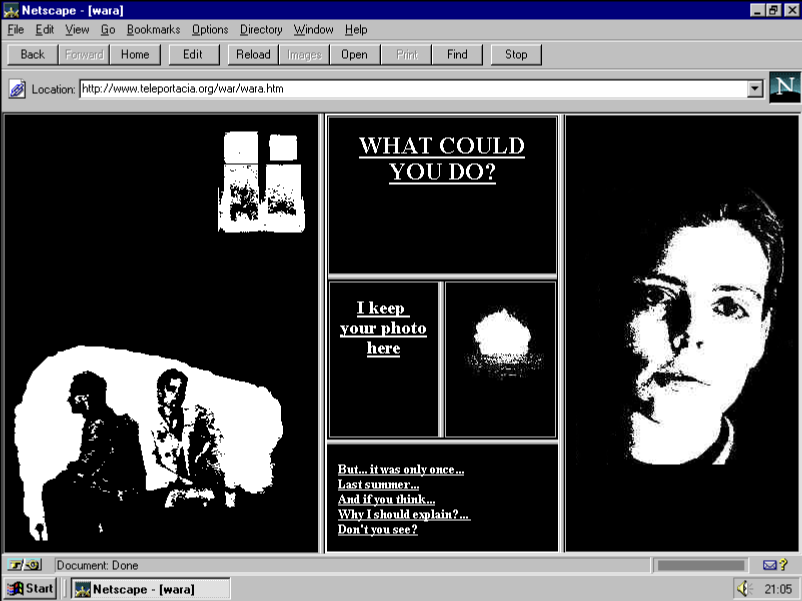
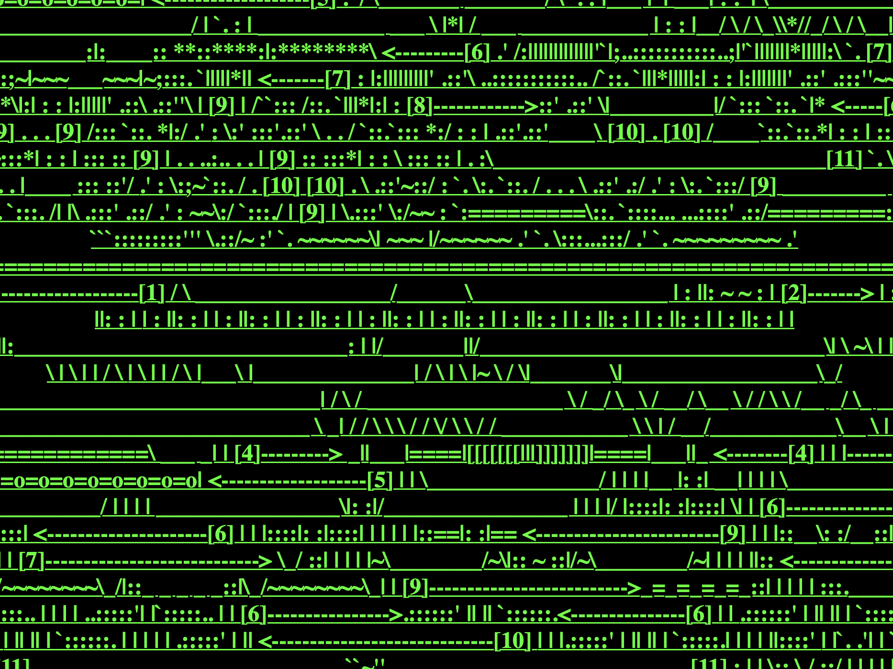
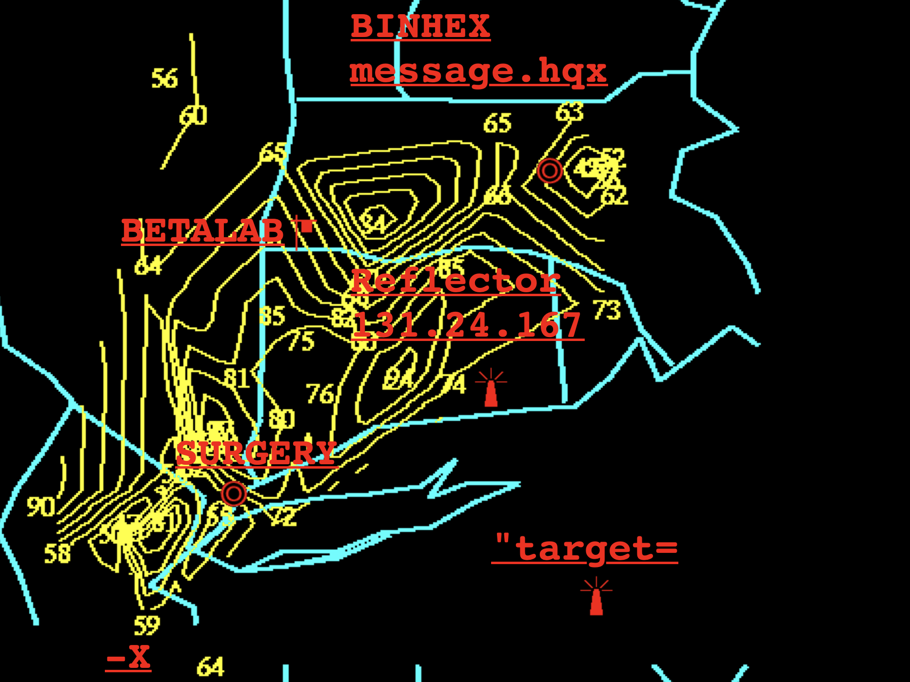
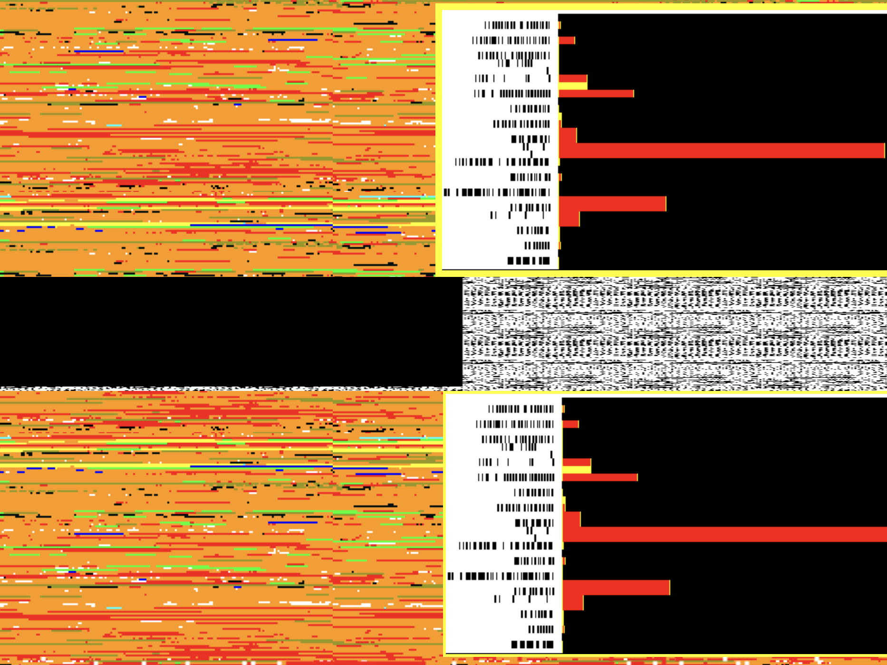
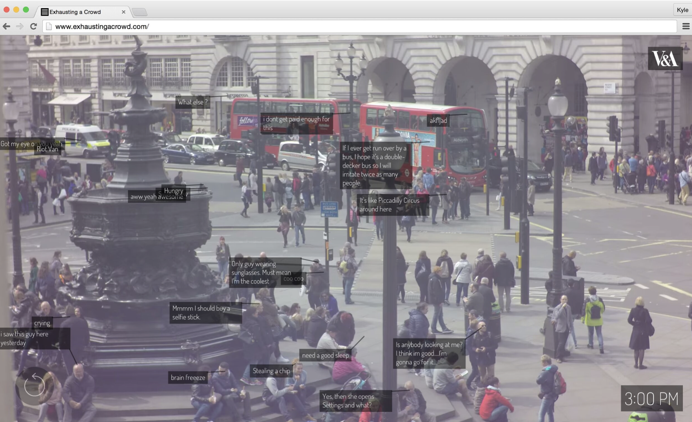

RD
1.
My Boyfriend Came Back From War by Olia Lialina is an interactive browser-based piece of internet artwork created in 1996 during the Net Art Era.

The art piece talks about relationship issues between a couple including an affair, the idea of marriage and the difficulty of reconnecting between eachother after the man returns back from war. After all of the possible choices have been clicked by the viewer, the screen becomes solid black with empty windows signifying the feelings of emptiness or loneliness. Lialina used a combination of animated gif images, hypertext and links to create a non-linear experience for the viewer. This artwork was specifically designed to only be viewed in an internet browser to create the illusion of a "thought process" by the human brain.
Olia Lialina is an Internet artist and theorist who specialises in experimental film.
2.
Developed by the art collective Jodi
Joan Heemskerk and Dirk Paesmans,
Jodi.org serves as an exploration of digital aesthetics and the complexities of internet interaction. It's chaotic, it's a little disorienting to be honest, users are caught off gaurd by what may seem as a surreal landscape which challenges conventional web nagivation. the site features glitch aesthetucs and unsual visuals that envoke confusion and intrigue to anyone who may come across it. I feel this artwork forces the user to reflect on their reltionship with technology, emphasising on mistrust, fear and curiosity. For me, Jodi created an environment that feels both playful and eerie.


my experience on Jodi, was non-linear and unpredictable, inviting users to explore the site without clear direction is not something everyone is used to. as i interacted with the page i was overwhelmed with the amount of visual stimuli that resembled a video game glitch, to say the least. This chaotic presentation serves to highlight the absurdity of digital experiences and the often-overlooked beauty found in technological malfunctions. Jodi's approach to web art reminds me of dadism, where randomness and error are celebrated rather than avoided. while reading up on them, i wasn't surpised to learn that the artists have been recognised as pioneers in net art, using their platform to push thought- about the nature of online interactions. Through their use of code and design, they turned the act of browsing into a journey that forces one to challenge their perception of both art and technology.

3.
"Exhausting a Crowd" by Kyle McDonald is an
Interactive, crowdsourced digital artwork.
The piece invites users to annotate 12 hours of pre-recorded footage from a busy public space, allowing them to comment on everyday life.

The artwork explores surveillance, public behavior, and crowdsourcing. By enabling viewers to document and interpret the actions of strangers, it highlights the tension between anonymity in public spaces and the invasive nature of observation. The annotations create a narrative that is collaborative, allowing users to give their diverse perspectives of what they think is relevant.
"Exhausting a Crowd" challenges it's users to reconsider their role as observers and instead become active participants in making meaning out of what may seem like ordinary moments.
23rd Jan, 2025.
Ritsikaa Das